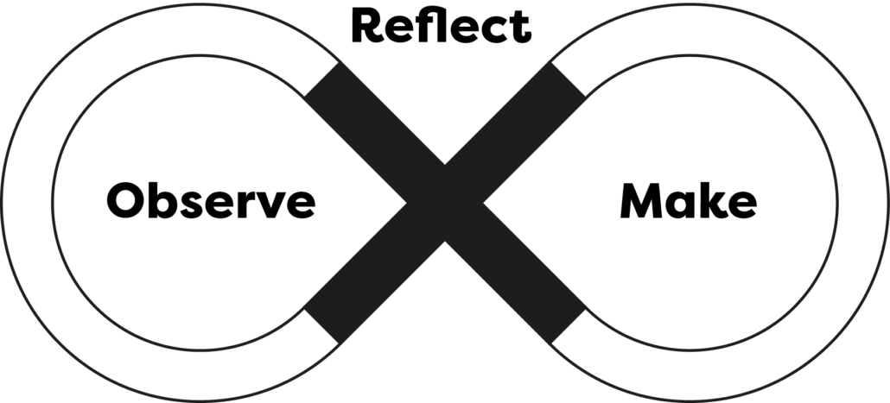
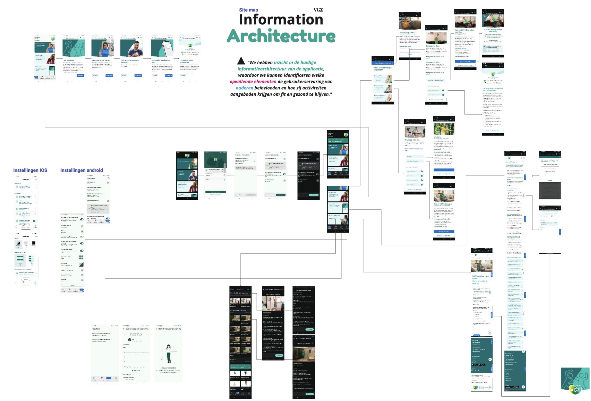
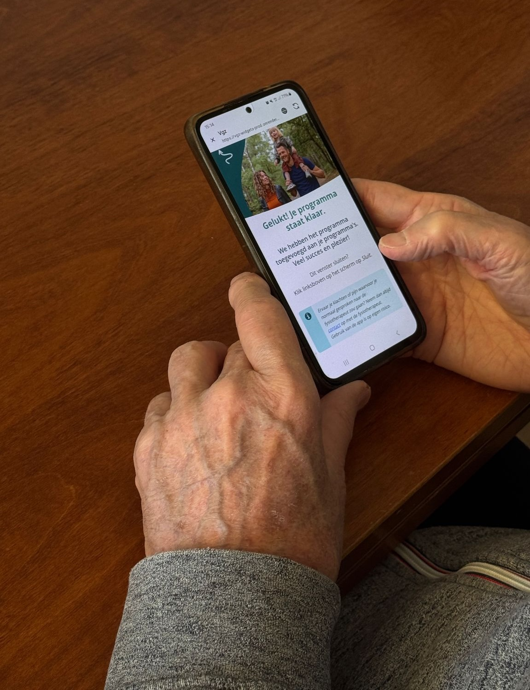
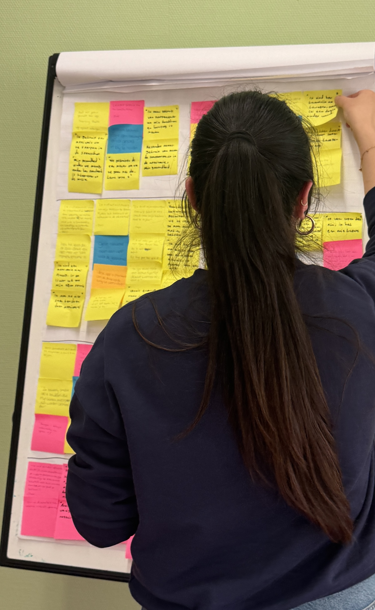
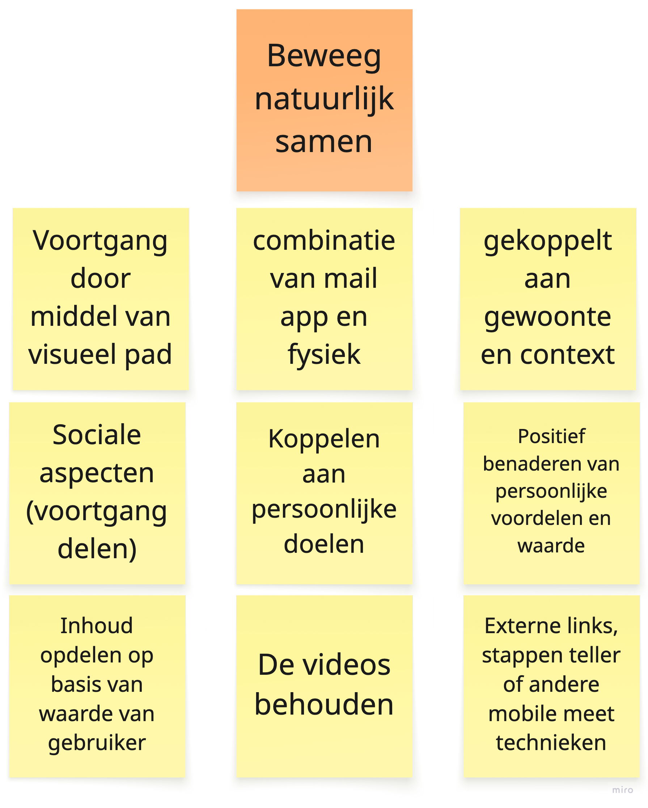
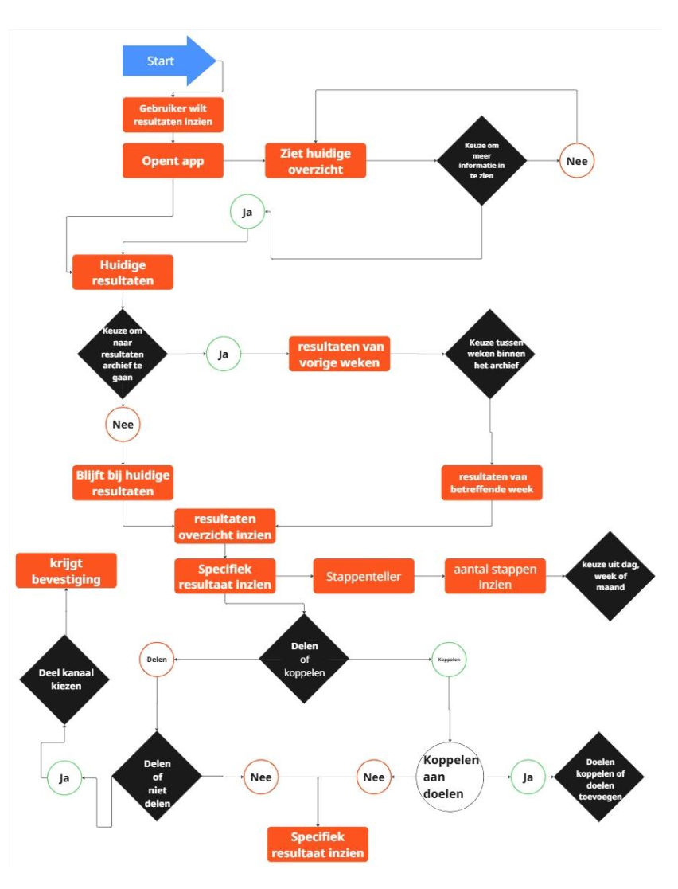

Interactieve coach voor soepel & sterk bewegen
Een beweegapp voor 65-plussers herontworpen: laagdrempelig, persoonlijk en aansluitend op wat ouderen écht motiveert.
- Rol: UX/UI Designer
- Duur: 5 maanden (2025)
- Team: 5 studenten
- Tools: Figma, Miro
Introductie
Tijdens de hoofdopdracht van mijn opleiding Communication & Multimedia Design heb ik samen met vier medestudenten en het designteam van VGZ gewerkt aan de vernieuwing van de Soepel & Sterk Coach app. Deze app helpt ouderen om gezonder te blijven en langer actief te zijn. De app was al succesvol, maar VGZ wilde de ervaring verbeteren: toegankelijker, persoonlijker en beter afgestemd op de behoeften van ouderen.
Context & Uitdaging
De bestaande Soepel & Sterk Coach app moest toegankelijker en persoonlijker worden.
- Verschillende behoeften Ouderen hebben uiteenlopende fysieke mogelijkheden en digitale vaardigheden.
- Toegankelijkheid De app moet eenvoudig en intuïtief te gebruiken zijn.
- Ontwerpuitdaging Een ervaring ontwerpen die aansluit bij persoonlijke voorkeuren en motiveert om te bewegen.
Doelstelling
Ouderen stimuleren om regelmatig te bewegen en langer gezond en zelfstandig te blijven.
- Laagdrempelig Bewegen eenvoudig en toegankelijk maken.
- Persoonlijk Aansluiten bij individuele behoeften en doelen.
- Motiverend Ouderen ondersteunen om actief te blijven.
Doelgroep
Volwassenen van 65 jaar en ouder, met verschillende fysieke mogelijkheden en digitale vaardigheden.
- Zelfstandigheid Gezond en actief blijven in het dagelijks leven.
- Sociaal contact Waarderen contact en samen bewegen.
- Drempels Kunnen fysieke beperkingen of technologische terughoudendheid ervaren.
Ontwerpvraag
Hoe kunnen we digitale interfaces en interacties ontwerpen die ouderen van 65+ stimuleren om bewuster te bewegen en lichamelijke klachten te verminderen?
IBM Loop Framework
Voor dit project maakten we gebruik van The Loop uit het IBM Enterprise Design Thinking framework. Dit model combineert structuur met flexibiliteit en sluit goed aan bij complexe ontwerpvragen.
In een continue cyclus van Observeren, Reflecteren en Maken werkten we aan het begrijpen van de huidige situatie en het vormgeven van toekomstige mogelijkheden.
De kracht van deze aanpak is dat inzichten steeds opnieuw vertaald worden naar nieuwe ideeën en prototypes. Prototyping en testen speelden een belangrijke rol om ideeën direct te toetsen en te verbeteren.

Onderzoek
Het onderzoek bestond uit twee sporen: Information Architecture en interviews met de doelgroep. Op deze manier konden we zowel de bestaande structuur van de app in kaart brengen als direct inzicht krijgen in de ervaringen en behoeften van de doelgroep. Alle bevindingen zijn uiteindelijk samengebracht in een affinity mapping, waaruit duidelijke kansgebieden naar voren kwamen.
Information Architecture
Bij de IA-analyse onderzochten we de structuur, flows en terminologie van de app en de VGZ-website. Dit leverde de volgende bevindingen op:
- Inconsistente aanspreekvormen (u vs. jij).
- Overlappende categorieën die verwarring veroorzaken.
- Dode navigatiepaden zonder logische vervolgopties.
- Belangrijke functies stonden niet op een intuïtieve plek.


Interviews & testen met de doelgroep
We spraken ouderen om hun beweeggewoontes en technologiegebruik te begrijpen en testten de bestaande app om sterke en zwakke punten bloot te leggen. De belangrijkste inzichten waren:
- Grote behoefte aan eenvoudige en duidelijke navigatie.
- Meer begeleiding en persoonlijke uitleg gewenst.
- Duidelijke weergave van voortgang motiveert.
- Te drukke interfaces of lange instructies werken juist demotiverend.
Bedrijfsdoelen
Tijdens de playbacksessie hebben we samen met VGZ de belangrijkste bedrijfsdoelen vastgesteld. Deze doelen vormden de uitgangspunten voor het verdere ontwerp van de app.
Motivatie & gezondheid
Gebruikers motiveren om programma's af te maken en opnieuw te starten.
Effectieve programma's aanbieden die klachten helpen verminderen, zonder direct zorg te hoeven zoeken.
Gebruiksgemak & inzicht
Een gebruiksvriendelijke interface ontwikkelen die aansluit bij de doelgroep van 65 jaar en ouder.
Inzicht krijgen in de mate waarin gebruikers daadwerkelijk geholpen worden.
Regelgeving & veiligheid
Alle content en functionaliteiten moeten voldoen aan de geldende regelgeving van VGZ.
Relevante inzichten verzamelen binnen de juridische kaders.
Medische terminologie vermijden en juridische risico's minimaliseren.
Affinity mapping & kerninzichten
Alle resultaten zijn geclusterd in een affinity map. Dit leidde tot duidelijke kerninzichten en scherpere bedrijfsdoelen:
- Korte en haalbare activiteiten houden de aandacht vast.
- Een persoonlijke toon en sociale motivatie maken de app aantrekkelijker.
- Eenvoudige instap is cruciaal om nieuwe gebruikers niet af te schrikken.
- Bedrijfsdoelen: meer consistentie in content, versterking merkidentiteit, focus op meetbare gezondheidseffecten.

Kansgebieden
Uit de affinity mapping kwamen twee belangrijke kansgebieden naar voren. Ouderen halen motivatie uit sociale contacten en samen bewegen. Daarnaast zien zij bewegen als een manier om gezond te blijven en lichamelijke klachten te voorkomen. Deze inzichten vormden de basis voor de conceptontwikkeling.
Motivatie & samen bewegen
Ouderen halen motivatie uit samen bewegen en sociale contacten. Tegelijkertijd kunnen seizoenen en slecht weer een belemmering vormen.
Sociale motivatie is belangrijk, maar beweegactiviteiten moeten ook haalbaar blijven wanneer buiten bewegen lastig is.
"Ik wandel graag met mijn echtgenoot."
"Bewegen helpt mij om sociale contacten te houden."
"In de winter kan ik buiten niet fietsen."
"Hoeveel we bewegen is sterk afhankelijk van het seizoen."
Gezond & klachten voorkomen
Ouderen zien bewegen als een belangrijk onderdeel van gezond ouder worden. Het helpt hen om klachten te verminderen en zowel fysiek als mentaal fit te blijven.
Gezond blijven en klachten voorkomen zijn sterke motivaties om te bewegen. De app kan hierop aansluiten met haalbare activiteiten.
"Ik vind beweging belangrijk vanwege rugklachten."
"Ik beweeg, omdat het is bewezen dat mijn levensjaren worden vermeerderd."
"Ik haal motivatie uit mezelf: wanneer ik een dag niet gelopen heb, krijg ik een schuldgevoel."
"We bewegen veel om fit en gezond te blijven."
Conceptontwikkeling
Beweeg Natuurlijk Samen
Na gezamenlijk brainstormen en stemmen met het VGZ-team kozen we voor het concept Beweeg Natuurlijk Samen. Dit concept koppelt dagelijkse routines aan beweegactiviteiten en maakt voortgang inzichtelijk. Zo ontstaat motivatie en worden gezondheidsrisico's verminderd.

Kerninteracties
- Persoonlijke doelen koppelen aan routines.
- Voortgang visueel vastleggen met meetfactoren.
- Resultaten delen met vrienden of familie.
- Samen beweegmomenten plannen en uitvoeren.

Resultaat & Impact
De vernieuwde Soepel & Sterk Coach app vertaalt de inzichten uit het onderzoek naar een concreet ontwerp:
- Motiverend en sociaal: ouderen blijven actiever doordat persoonlijke doelen en gezamenlijke beweegmomenten centraal staan.
- Gebruiksvriendelijk: de app biedt duidelijke navigatie en eenvoudige instap.
- Gezondheidsgericht: korte en haalbare activiteiten helpen klachten te voorkomen en bevorderen vitaliteit.
- Uitbreidbaar en modulair: nieuwe programma's of functies kunnen eenvoudig worden toegevoegd.